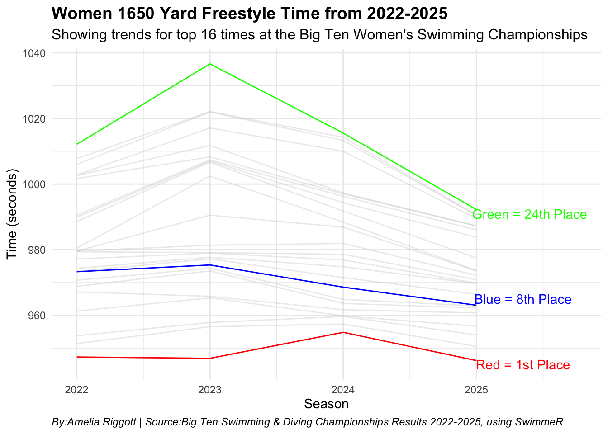

Has the addition of UCLA and USC made the Big Ten Women’s Swimming Conference more competitive?
bigten
swim
data
Author
Amelia Riggott
Published
April 14, 2025
After moving from the Pac-12, University of California, Los Angles (UCLA) and University Southern California (USC) both made the decision to join the Big Ten Conference. The Big Ten has always been one of the most competitive swimming conferences in the nation, with top teams like Ohio State and Indianna.
Following the conclusion of the 2024-2025 season-the first with the new additions-we can see that times are getting faster across multiple events. The question is: Is it fair to say that times have improved because of the addition of UCLA and USC, or is this simply part of the trend in collegiate swimming?
To answer this question, we need to take a deep dive into the championship times from 2022 and compare them with 2025, focusing on the women’s 1,650-yard freestyle event-the most testing endurance race.
Using the SwimmeR package in R, I imported times from PDFs, which is the common format for meet results. This then allowed me to extract placing and easily compare times from different years. I looked at the top 24 finishers (scoring positions) over the past four years to see if there are any trends.
Code
library(tidyverse)
── Attaching core tidyverse packages ──────────────────────── tidyverse 2.0.0 ──
✔ dplyr 1.1.4 ✔ readr 2.1.5
✔ forcats 1.0.0 ✔ stringr 1.5.1
✔ ggplot2 3.5.1 ✔ tibble 3.2.1
✔ lubridate 1.9.4 ✔ tidyr 1.3.1
✔ purrr 1.0.4
── Conflicts ────────────────────────────────────────── tidyverse_conflicts() ──
✖ dplyr::filter() masks stats::filter()
✖ dplyr::lag() masks stats::lag()
ℹ Use the conflicted package (<http://conflicted.r-lib.org/>) to force all conflicts to become errors
Code
library(SwimmeR)
Columns 'Prelims_Time' and 'Finals_Time' have been changed to 'Prelims' and 'Finals' respectively. Please update your workflows.
Code
library(gt)library(ggtext)data <-read.csv("data/data_big_ten_swim (1).csv")filtered_data <- data |>filter(season %in%c(2022, 2023, 2024, 2025)) |>filter(place >=1, place<=24) |>filter(!is.na(final_in_seconds))long_data <-filtered_data |>filter( event =="Women 1650 Yard Freestyle", place >=1, place<=24, !is.na(final_in_seconds) )ggplot()+geom_line(data=long_data, aes(x=season, y=final_in_seconds, group=place), color="grey", alpha=.3) +geom_line(data =filter(long_data, place %in%c(1)), aes(x=season, y=final_in_seconds, group=place), color="red") +geom_line(data =filter(long_data, place %in%c(8)), aes(x=season, y=final_in_seconds, group=place), color="blue") +geom_line(data =filter(long_data, place %in%c(24)), aes(x=season, y=final_in_seconds, group=place), color="green") +geom_text(aes(x=2025.35, y=945, label ="Red = 1st Place"), colour="red") +geom_text(aes(x=2025.35, y=965, label ="Blue = 8th Place"), colour="blue") +geom_text(aes(x=2025.40, y=991, label ="Green = 24th Place"), colour="green") +scale_x_continuous(limits =c(2022, 2025.75)) +theme_minimal() +theme(plot.title =element_text(face ="bold", size =14, hjust =0),plot.subtitle =element_text(size =12, hjust =0),plot.caption =element_text(face ="italic", hjust =0) ) +labs(title ="Women 1650 Yard Freestyle Time from 2022-2025", subtitle ="Showing trends for top 16 times at the Big Ten Women's Swimming Championships",x ="Season",y ="Time (seconds)", caption = ("By:Amelia Riggott | Source:Big Ten Swimming & Diving Championships Results 2022-2025, using SwimmeR") )

There is a clear improvement in times for both 8th and 16th place finishers, but not so much for 1st place. Over the years, the top times have stayed relatively stable, but the rest of the field has significantly improved. To score at Big Tens, you now have to swim much faster than you did three years ago.
This patten suggests that while the elite performers at the top haven’t changed dramatically, the depth of the conference has improved.
To really highlight this change, let’s examine the 24th place times, the cutoff for scoring points at the championship.
Code
score_place <- long_data |>filter(place ==24) |>select(season, name, final_in_seconds) |>arrange(season)score_place |>gt() |>cols_label(final_in_seconds ="Time in Finals",season ="Season",name ="Name" ) |>tab_header(title ="24th Place Times for Women's 1650 Yard Freestyle",subtitle ="Performance time trends at the Big Ten Championships (2022-2025)" ) |>tab_style(style =cell_text(color ="black", weight ="bold", align ="left"),locations =cells_title("title") ) |>tab_style(style =cell_text(color ="black", align ="left"),locations =cells_title("subtitle") ) |>tab_style(style =cell_text(align ="center"),locations =cells_body(columns =everything()) ) |>tab_style(style =cell_text(align ="center"),locations =cells_column_labels(columns =everything()) ) |>tab_source_note(source_note =md("**By:** Amelia Riggott | **Source:** Big Ten Swimming & Diving Championships Results 2022-2025, using SwimmeR")) %>%tab_style(locations =cells_column_labels(columns =everything()),style =list(cell_borders(sides ="bottom", weight =px(3)),cell_text(weight ="bold", size =12) ) ) |>opt_row_striping() |>opt_table_lines("none") |>tab_style(style =list(cell_fill(color ="red"),cell_text(color ="white") ),locations =cells_body(rows = season =="2022") ) |>tab_style(style =list(cell_fill(color ="red"),cell_text(color ="white") ),locations =cells_body(rows = season =="2025") )
24th Place Times for Women's 1650 Yard Freestyle
Performance time trends at the Big Ten Championships (2022-2025)
Season
Name
Time in Finals
2022
Groysman, Yulia G
1012.14
2023
Kilpatrick, Katelyn A
1036.63
2024
Kaljevic, Anja
1015.56
2025
Miklos, Riley
992.23
By: Amelia Riggott | Source: Big Ten Swimming & Diving Championships Results 2022-2025, using SwimmeR
In just the last three years, you needed to drop 20 seconds to still score at the championships. In 2022, Groysman swam a 16:52, while in 2025, Miklos went 16:32 to take the same scoring spot.
So, does the addition of UCLA and USC make a major difference?
Code
simp_long <- long_data |>filter(season =="2025") |>select(place, name, team, final_in_seconds)simp_long |>gt() |>cols_label(final_in_seconds ="Time in Finals",team ="Team",name ="Name" ) |>tab_header(title ="UCLA and USC times in the 2025 Championships",subtitle ="UCLA and USC score points for 8th place and 21st place in 2025" ) |>tab_style(style =cell_text(color ="black", weight ="bold", align ="left"),locations =cells_title("title") ) |>tab_style(style =cell_text(color ="black", align ="left"),locations =cells_title("subtitle") ) |>tab_style(style =cell_text(align ="center"),locations =cells_body(columns =everything()) ) |>tab_style(style =cell_text(align ="center"),locations =cells_column_labels(columns =everything()) ) |>tab_source_note(source_note =md("**By:** Amelia Riggott | **Source:** Big Ten Swimming & Diving Championships Results 2022-2025, using SwimmeR")) %>%tab_style(locations =cells_column_labels(columns =everything()),style =list(cell_borders(sides ="bottom", weight =px(3)),cell_text(weight ="bold", size =12) ) ) |>opt_row_striping() |>opt_table_lines("none") |>tab_style(style =list(cell_fill(color ="red"),cell_text(color ="white") ),locations =cells_body(rows = team =="UCLA") ) |>tab_style(style =list(cell_fill(color ="red"),cell_text(color ="white") ),locations =cells_body(rows = team =="Southern California") )
UCLA and USC times in the 2025 Championships
UCLA and USC score points for 8th place and 21st place in 2025
place
Name
Team
Time in Finals
1
Gan, Ching
Indiana
946.22
2
Nikanorov, Mila
Ohio
950.54
3
Kennedy, Eliot
Minnesota
954.05
4
Jorgenson, Genevieve
Nebraska
956.70
5
McKenna, Paige
Wisconsin
960.75
6
Ploeger, Marian
Michigan
962.29
7
Diaconescu, Rebecca
Michigan
962.87
8
Tuggle, Claire
Southern California
963.08
9
Denigan, Mariah
Indiana
966.46
10
McCarthy, Kathryn
Minnesota
969.65
11
Malys, Lucy
Ohio
969.80
12
Braun, Elle
Wisconsin
970.84
13
Waggoner, Madeline
Wisconsin
972.17
14
Nordmann, Zoe
Northwestern
973.55
15
Stoneburg, Blair
Wisconsin
973.64
16
Rankin, Mia
Ohio
977.47
17
Smith, Madison
Michigan
983.78
18
Mattice, Reagan
Purdue
986.04
19
Heiser, Elyse
Indiana
987.23
20
Moore, Morgan
Pennsylvania State
987.26
21
Kolessar, Ashley
UCLA
989.49
22
Sands, Adele E
Purdue
990.43
23
Bisiacchi, Caterina
Nebraska
990.55
24
Miklos, Riley
Nebraska
992.23
By: Amelia Riggott | Source: Big Ten Swimming & Diving Championships Results 2022-2025, using SwimmeR
The answer is yes and no. Yes, they take up two scoring spots and make times faster. However, they don’t account for a full 20-second difference.
This proves that while UCLA and USC have made an impact, it ultimately falls down to the trend that collegiate swimming is simply getting faster.